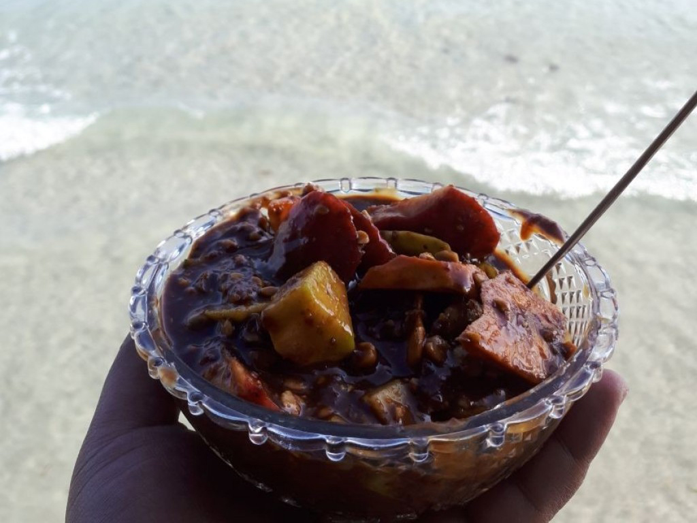

Natsepa Beach

Natsepa Beach is one of the famous beaches in Ambon, the capital of Maluku. Natsepa Beach has clean white sand and clear blue sea water. And don't forget to taste "the rujak Natsepa its so delicous".